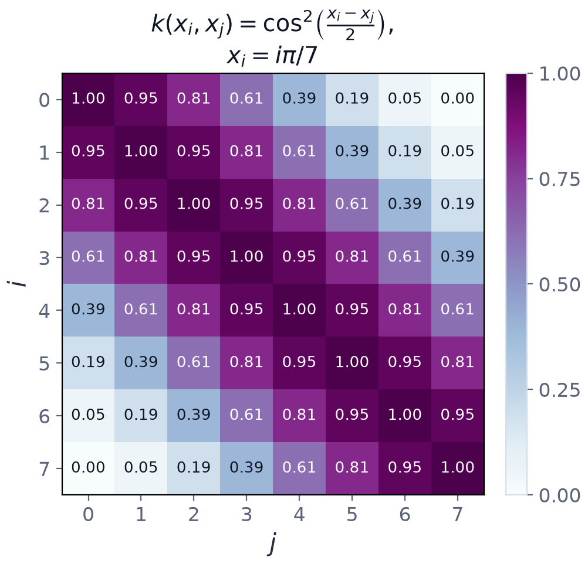

Chapter 6: Quantum Feature Maps and the Fidelity Kernel¶
We now know how to turn a data point into a quantum state. Recall that a kernel method needs only similarities between pairs of points. This chapter builds the bridge: it uses the quantum computer purely as a machine for measuring how alike two encoded data points are. We define the quantum feature map and the fidelity kernel it induces, prove that the kernel has every property a kernel needs, and work through the simplest example in complete detail, the kernel of a single angle-encoded qubit. Chapter 7 shows how the kernel entries are estimated on a device; Chapter 8 plugs them into a support vector machine.
6.1 The quantum feature map¶
A data point \(x\in\mathcal{X}\subseteq\mathbb{R}^d\) is mapped to a state of \(n\) qubits by a fixed, data-dependent unitary \(U_\varphi(x)\):
The feature space is the Hilbert space \(\mathcal{H}\cong\mathbb{C}^{2^n}\), of dimension \(2^n\). If you prefer to treat the density operator as the feature vector, as one must when the state is mixed or noisy, then \(\rho(x)\) lives in the real affine space of unit-trace Hermitian operators, of dimension \(4^n-1\); equivalently one may use its traceless part \(\rho(x)-I/2^n\).
Two things deserve underlining.
- The map has no trainable parameters. \(U_\varphi\) is chosen, not learned. The whole feature map is fixed before any learning begins.
- Large dimension alone is no advantage. What matters is the geometry that the map induces on your data, that is, which points it makes similar.
Key idea
A quantum computer need not output the feature vector. It needs to supply only inner products between feature vectors, which is all a kernel method requires. This mirrors the classical kernel trick of Chapter 4: the feature vector is never written down explicitly.
6.2 The fidelity (quantum) kernel¶
The fidelity kernel is the squared overlap of two encoded states:
The second form follows by writing the trace of a product of two projectors, \(\operatorname{tr}\big(\lvert\varphi\rangle\langle\varphi\vert\varphi'\rangle\langle\varphi'\rvert\big)=\langle\varphi'\vert\varphi\rangle\langle\varphi\vert\varphi'\rangle=\lvert\langle\varphi\vert\varphi'\rangle\rvert^2\). Physicists call it the fidelity between the two states, and it behaves exactly as a similarity ought to.
Properties of the fidelity kernel
- Real and symmetric: \(k(x,x')=k(x',x)\in\mathbb{R}\), because it is a squared modulus.
- Bounded: \(0\le k(x,x')\le1\). The lower bound is clear; the upper bound is the Cauchy-Schwarz inequality for unit vectors, \(\lvert\langle\varphi\vert\varphi'\rangle\rvert\le\lVert\varphi\rVert\,\lVert\varphi'\rVert=1\).
- Unit diagonal: \(k(x,x)=1\) for pure states. All data lie on the unit sphere of feature space.
- Global phase removed: squaring the modulus discards the global phase, exactly the degree of freedom with no physical meaning.
- Positive semidefinite. See below.
Why the kernel is positive semidefinite. Define the Hilbert-Schmidt inner product of two Hermitian operators, \(\langle A,B\rangle_{HS}=\operatorname{tr}(AB)\), which is real and positive-definite on Hermitian matrices. Then \(k(x,x')=\langle\rho(x),\rho(x')\rangle_{HS}\). For any real coefficients \(c_i\),
Therefore every Gram matrix of the kernel is positive semidefinite, so by the Moore-Aronszajn theorem \(k\) is a positive-definite kernel. It defines a reproducing-kernel Hilbert space and may be dropped into any kernel algorithm.
Exact versus estimated
Positive semidefiniteness is automatic in exact arithmetic, because a matrix of overlaps is a Gram matrix by construction. The failure of this property that you will see in Chapter 8 is purely an artefact of finite sampling and device noise.
6.3 The simplest kernel: one angle-encoded qubit¶
Example 6.1: the kernel induced by a single-qubit angle encoding
A scalar feature \(x\) is encoded by a single \(R_Y\) rotation, \(\lvert\varphi(x)\rangle=R_Y(x)\lvert0\rangle=\cos\frac x2\lvert0\rangle+\sin\frac x2\lvert1\rangle\).
(a) Derive the induced kernel \(k(x,x')=\lvert\langle\varphi(x')\vert\varphi(x)\rangle\rvert^2\) in closed form. (b) Evaluate it for \(x=0\) and \(x'=\pi/2\). (c) What is its value when \(x-x'=\pi\), and what does that mean?
Hint. The overlap is a real inner product of two unit vectors in the plane; the angle-subtraction identity does all the work.
Step 1: the overlap. Both states are real, so the inner product is
Step 2: the kernel. Square the overlap and apply the half-angle identity:
Step 3: part (b). With \(x=0\), \(x'=\pi/2\) the separation is \(x-x'=-\pi/2\), so \(k=\cos^2\!\big(-\tfrac\pi4\big)=\tfrac12\).
Step 4: part (c). A separation of \(\pi\) gives \(k=\cos^2\frac\pi2=0\): the two data points are mapped to orthogonal feature states.
Answer. \(k(x,x')=\cos^2\frac{x-x'}2=\tfrac12(1+\cos(x-x'))\); (b) \(k=\tfrac12\); (c) \(k=0\), the features are orthogonal, so the points are maximally dissimilar.
Remark. The kernel is stationary (it depends only on \(x-x'\)) and \(2\pi\)-periodic. Feature scaling is therefore part of the model, not a preprocessing afterthought: two very different data points differing by a full period would be assigned kernel value one.
This is the whole idea in miniature: a quantum feature map defines a kernel without the \(2\)-dimensional feature space ever being written down by the user, and the kernel is a closed-form, smooth, periodic function of the distance between points.

Figure 6.1 shows the Gram matrix of this kernel for eight equally spaced points \(x_i=i\pi/7\), \(i=0,\dots,7\). The diagonal is \(1\), entries decay with \(\lvert i-j\rvert\), and the extreme pair \(x=0\), \(x=\pi\) has \(k=0\).
6.4 A Gram matrix and its validity¶
Example 6.2: Gram matrix of three points and its validity
Take the three training points \(x_1=0\), \(x_2=\pi/2\), \(x_3=\pi\) and the kernel of Example 6.1.
(a) Construct the \(3\times3\) Gram matrix. (b) Show that it is positive semidefinite. (c) Confirm independently using the eigenvalues \(\lambda_k=1+\cos(k\pi/4)\), \(k=1,2,3\).
Step 1: entries. The diagonal entries are \(1\). The separations \(\pi/2\) and \(\pi\) give the off-diagonal entries: \(k(x_1,x_2)=k(x_2,x_3)=\cos^2\frac\pi4=\tfrac12\) and \(k(x_1,x_3)=\cos^2\frac\pi2=0\).
Step 2: the Gram matrix.
Step 3: leading minors (Sylvester's criterion). For a small symmetric matrix, a quick route to positive definiteness is that all leading principal minors are positive: \(\det[1]=1\); \(\det\begin{pmatrix}1&\frac12\\\frac12&1\end{pmatrix}=1-\tfrac14=\tfrac34\); and \(\det K=1\big(1-\tfrac14\big)-\tfrac12\big(\tfrac12-0\big)=0.75-0.25=0.5\). The minors \(1,\ 0.75,\ 0.5\) are all strictly positive.
Step 4: eigenvalue cross-check. Write \(K=I+\tfrac12A\), where \(A\) is the adjacency matrix of a path of three vertices. \(A\) has eigenvalues \(2\cos\frac{k\pi}{4}\) for \(k=1,2,3\), that is \(\sqrt2,0,-\sqrt2\), so \(K\) has eigenvalues \(1+\cos\frac{k\pi}4\): \(1.707,\ 1,\ 0.293\). All are positive, and their product \(1.707\times1\times0.293=0.5\) reproduces \(\det K\).
Answer. \(K\) is positive definite, hence a valid kernel matrix: minors \(1,0.75,0.5\) are all positive, and the eigenvalues \(1.707,1,0.293\) multiply to \(\det K=0.5\).
Remark. Positive definiteness is exactly what guarantees that the dual SVM problem of Chapter 4 is convex with a unique optimum. Note that any matrix of overlaps of quantum states is automatically positive semidefinite, since it is a Gram matrix by construction. The explicit check is a sanity test, not a discovery.
6.5 Bandwidth, periodicity and the geometry of the data¶
For angle encoding with several features the kernel is the product \(\prod_j\cos^2\frac{x_j-x_j'}2=\prod_j\tfrac12\big(1+\cos(x_j-x_j')\big)\). Expanding the product, it is a sum over \(2^d\) terms, one for each subset \(S\) of the features, of \(2^{-d}\prod_{j\in S}\cos(x_j-x_j')\). Each term is a product of cosines of feature differences: the quantum feature space contains every product of the features, and the kernel is a fixed, particular weighting of them. That is the sense in which angle encoding is a "feature map into \(2^n\) dimensions" and also the sense in which its kernel is not exotic: it is a smooth, periodic, stationary similarity.
If the features are multiplied by a scale \(s\) before encoding, each factor becomes \(\cos^2\frac{s(x_j-x_j')}2\). The scale plays the role of an inverse bandwidth, as the kernel width does in a classical RBF kernel. Choosing \(s\) is not cosmetic. It decides how far apart two points must be before the model treats them as different, and with periodic features it also decides whether two distant points are accidentally identified (Exercise 6.4).
The general lesson is the one of the previous chapter: the kernel is fixed by the encoding, and the kernel is the model's idea of what is similar. A good similarity reflects structure in the data; a poor one cannot be rescued by the optimiser.
6.6 Summary¶
Chapter Summary
- A quantum feature map is a fixed, parameter-free unitary \(U_\varphi(x)\) that sends \(x\) to \(\lvert\varphi(x)\rangle\) in a \(2^n\)-dimensional space (with \(\rho(x)\) in a \((4^n-1)\)-dimensional affine space of operators).
- The fidelity kernel \(k(x,x')=\lvert\langle\varphi(x)\vert\varphi(x')\rangle\rvert^2=\operatorname{tr}(\rho(x)\rho(x'))\) is real, symmetric, bounded in \([0,1]\), has \(k(x,x)=1\), and is insensitive to global phase.
- It is positive semidefinite, because it is a Hilbert-Schmidt inner product of the operators \(\rho(x_i)\), so it is a legitimate kernel with its own reproducing-kernel Hilbert space.
- For one \(R_Y\)-encoded qubit, \(k(x,x')=\cos^2\frac{x-x'}2\): stationary, \(2\pi\)-periodic, \(0\) at separation \(\pi\), \(\tfrac12\) at separation \(\pi/2\).
- The Gram matrix of \(\{0,\pi/2,\pi\}\) has minors \(1,0.75,0.5\) and eigenvalues \(1.707,1,0.293\).
- Feature scaling is part of the model: it is the kernel bandwidth.
6.7 Exercises¶
Exercise 6.1
Evaluate \(k(x,x')=\cos^2\frac{x-x'}2\) for separations \(\pi/3\), \(\pi/2\) and \(\pi\). At what separation is \(k=\tfrac12\)?
Answer
\(\pi/3\): \(\cos^2\frac\pi6=\tfrac34\). \(\pi/2\): \(\cos^2\frac\pi4=\tfrac12\). \(\pi\): \(0\). The kernel equals \(\tfrac12\) at separation \(\pi/2\) (generally \(\cos^2\frac d2=\tfrac12\iff d=\frac\pi2\)).
Exercise 6.2
Show that any pure-state encoding has \(0\le k(x,x')\le1\) and \(k(x,x)=1\).
Answer
\(k=\lvert\langle\varphi\vert\varphi'\rangle\rvert^2\ge0\). By Cauchy-Schwarz, \(\lvert\langle\varphi\vert\varphi'\rangle\rvert\le\lVert\varphi\rVert\lVert\varphi'\rVert=1\), so \(k\le1\). And \(k(x,x)=\langle\varphi\vert\varphi\rangle^2=1\).
Exercise 6.3
Write the Gram matrix of the two points \(x_1=0\), \(x_2=\pi/2\) and find its eigenvalues.
Answer
\(K=\begin{pmatrix}1&\frac12\\\frac12&1\end{pmatrix}\), eigenvalues \(1\pm\frac12\): \(1.5\) and \(0.5\), both positive.
Exercise 6.4
Compute the Gram matrix of the points \(0,\ \pi,\ 2\pi\) under the kernel \(\cos^2\frac{x-x'}2\). Is it positive semidefinite? Is it positive definite? What does the result say about preprocessing?
Answer
\(k(0,\pi)=k(\pi,2\pi)=\cos^2\frac\pi2=0\) and \(k(0,2\pi)=\cos^2\pi=1\), so \(K=\begin{pmatrix}1&0&1\\0&1&0\\1&0&1\end{pmatrix}\). Its eigenvalues are \(2,1,0\). It is positive semidefinite but singular, not positive definite: the points \(0\) and \(2\pi\) are indistinguishable, since the encoding is \(2\pi\)-periodic. Features must be scaled into a window shorter than a period.
Exercise 6.5
A noisy device returns the estimated Gram matrix \(\begin{pmatrix}1&0.9&0\\0.9&1&0.9\\0&0.9&1\end{pmatrix}\). Can these be exact overlaps of three pure states?
Answer
No. The matrix is \(I+0.9A\) with \(A\) the path adjacency matrix, with eigenvalues \(1+0.9\sqrt2=2.27\), \(1\) and \(1-0.9\sqrt2=-0.27<0\). It is not positive semidefinite, but an exact matrix of overlaps always is. The estimate is corrupted by sampling or noise and needs repairing (Chapter 8).
Exercise 6.6
Prove that \(\operatorname{tr}(\rho(x)\rho(x'))=\lvert\langle\varphi(x)\vert\varphi(x')\rangle\rvert^2\).
Answer
\(\rho\rho'=\lvert\varphi\rangle\langle\varphi\vert\varphi'\rangle\langle\varphi'\rvert\). Its trace is \(\langle\varphi\vert\varphi'\rangle\operatorname{tr}\big(\lvert\varphi\rangle\langle\varphi'\rvert\big)=\langle\varphi\vert\varphi'\rangle\langle\varphi'\vert\varphi\rangle=\lvert\langle\varphi\vert\varphi'\rangle\rvert^2\).
Exercise 6.7
State the dimension of the Hilbert space and of the affine space of unit-trace Hermitian operators for \(n=3\) qubits.
Answer
Hilbert space: \(2^3=8\). Operators: \(4^3-1=63\).
Exercise 6.8
Why is a quantum computer able to evaluate a kernel whose feature space has dimension \(2^n\) without ever outputting the \(2^n\) amplitudes?
Answer
A kernel method needs only the inner products \(k(x,x')\), which are single numbers between \(0\) and \(1\). These can be estimated by suitable measurements (Chapter 7) without reading out the amplitudes themselves. Reading out all \(2^n\) amplitudes would require exponentially many measurements; the kernel never needs them.